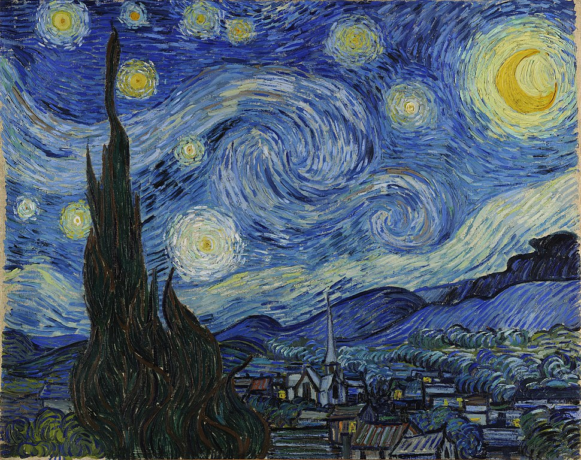

The Starry Night is an oil on canvas painting by Dutch Post-Impressionist painter Vincent van
Gogh. Painted in June 1889, it depicts the view from the east-facing window of his asylum room
at Saint-Rémy-de-Provence, just before sunrise, with the addition of an imaginary
village. It has been in the permanent collection of the Museum of Modern Art in New
York City since 1941, acquired through the Lillie P. Bliss Bequest. Widely regarded as Van
Gogh's magnum opus,The Starry Night is one of the most recognized paintings in Western
art

Museum Of Modern Art - June 1889
THE STORY OF STARRY NIGHT
Vincent van Gogh painted Starry Night in 1889 during his stay at the asylum of
Saint-Paul-de-Mausole near Saint-Rémy-de-Provence. Van Gogh lived well in the hospital; he was
allowed more freedoms than any of the other patients. If attended, he could leave the hospital
grounds; he was allowed to paint, read, and withdraw into his own room. He was even given a
studio. While he suffered from the occasional relapse into paranoia and fits - officially he had
been diagnosed with epileptic fits - it seemed his mental health was recovering.
Unfortunately, he relapsed. He began to suffer hallucination and have thoughts of suicide as he
plunged into depression. Accordingly, there was a tonal shift in his work. He returned to
incorporating the darker colors from the beginning of his career and Starry Night is a wonderful
example of that shift. Blue dominates the painting, blending hills into the sky. The little
village lays at the base in the painting in browns, greys, and blues. Even though each building
is clearly outlined in black, the yellow and white of the stars and the moon stand out against
the sky, drawing the eyes to the sky. They are the big attention grabber of the painting